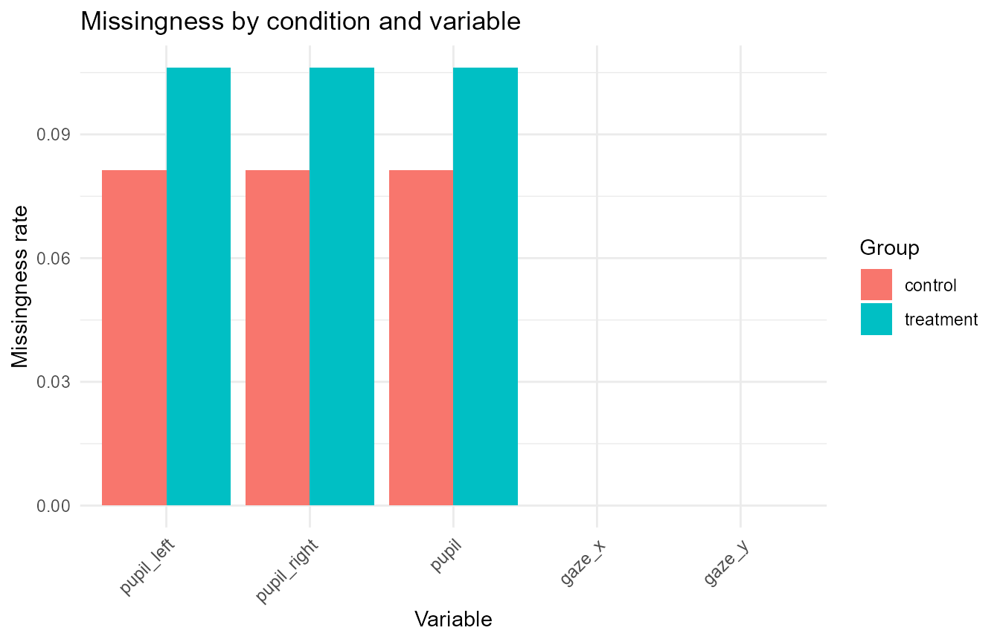
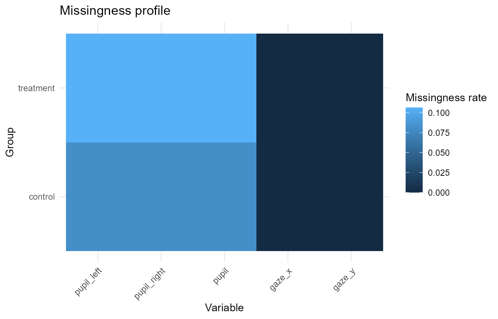

Missingness and data-coverage reporting
Source:vignettes/articles/missingness-coverage-reporting.Rmd
missingness-coverage-reporting.RmdThis article demonstrates compact helpers for summarising, plotting, and reporting missingness in Gazepoint-style data. The helpers are intended for transparent data-coverage review. They do not define exclusion rules by themselves.
Simulate example data
synthetic <- simulate_gazepoint_pupil_data(
n_subjects = 4,
n_trials = 4,
n_time_bins = 20,
conditions = c("control", "treatment"),
blink_probability = 0.08,
seed = 123
)
head(synthetic)
#> subject trial condition time_bin timestamp_ms gaze_x gaze_y pupil_left
#> 1 S001 1 control 1 0.00 993.1529 498.0263 3.355974
#> 2 S001 1 control 2 16.67 977.2926 794.7236 3.484336
#> 3 S001 1 control 3 33.34 950.9250 535.9970 3.385504
#> 4 S001 1 control 4 50.01 1219.3699 504.5001 3.248926
#> 5 S001 1 control 5 66.68 993.1579 563.9892 3.296683
#> 6 S001 1 control 6 83.35 941.0047 414.5260 3.317478
#> pupil_right blink trackloss pupil
#> 1 3.303798 FALSE FALSE 3.329886
#> 2 3.401831 FALSE FALSE 3.443084
#> 3 3.343765 FALSE FALSE 3.364635
#> 4 3.400768 FALSE FALSE 3.324847
#> 5 3.458472 FALSE FALSE 3.377578
#> 6 3.353714 FALSE FALSE 3.335596Summarise missingness
summarize_gazepoint_missingness() computes missing and
observed rates for selected variables, optionally within grouping
columns.
missingness <- summarize_gazepoint_missingness(
synthetic,
cols = c("pupil_left", "pupil_right", "pupil", "gaze_x", "gaze_y"),
group_cols = "condition"
)
missingness
#> group_id variable n_rows n_missing n_observed missing_rate observed_rate
#> 1 control pupil_left 160 13 147 0.08125 0.91875
#> 2 control pupil_right 160 13 147 0.08125 0.91875
#> 3 control pupil 160 13 147 0.08125 0.91875
#> 4 control gaze_x 160 0 160 0.00000 1.00000
#> 5 control gaze_y 160 0 160 0.00000 1.00000
#> 6 treatment pupil_left 160 17 143 0.10625 0.89375
#> 7 treatment pupil_right 160 17 143 0.10625 0.89375
#> 8 treatment pupil 160 17 143 0.10625 0.89375
#> 9 treatment gaze_x 160 0 160 0.00000 1.00000
#> 10 treatment gaze_y 160 0 160 0.00000 1.00000The British spelling alias is also available.
summarise_gazepoint_missingness(
synthetic,
cols = c("pupil_left", "pupil_right", "pupil")
)
#> group_id variable n_rows n_missing n_observed missing_rate observed_rate
#> 1 all pupil_left 320 30 290 0.09375 0.90625
#> 2 all pupil_right 320 30 290 0.09375 0.90625
#> 3 all pupil 320 30 290 0.09375 0.90625Plot missingness profiles
plot_gazepoint_missingness_profile() can use either raw
data or a missingness summary.
plot_gazepoint_missingness_profile(
missingness,
plot_type = "bar",
title = "Missingness by condition and variable"
)
A tile view can be useful when there are many groups or variables.
plot_gazepoint_missingness_profile(
missingness,
plot_type = "tile",
title = "Missingness profile"
)
Generate cautious report text
report_gazepoint_missingness() returns the summary
table, an overall table, a variable-level table, and compact report
text.
missingness_report <- report_gazepoint_missingness(
missingness,
digits = 1,
max_variables = 3
)
missingness_report$overall
#> n_variables n_groups total_cells total_missing overall_missing_rate
#> 1 5 2 1600 90 0.05625
missingness_report$variable_summary
#> variable n_rows n_missing missing_rate
#> 3 pupil 320 30 0.09375
#> 4 pupil_left 320 30 0.09375
#> 5 pupil_right 320 30 0.09375
#> 1 gaze_x 320 0 0.00000
#> 2 gaze_y 320 0 0.00000
missingness_report$report_text
#> [1] "Missingness was summarized across 5 variable(s). The overall cell-level missingness rate was 5.6%. The highest missingness variable(s) were: pupil (9.4%), pupil_left (9.4%), pupil_right (9.4%). These values are descriptive data-coverage diagnostics and do not by themselves define exclusion decisions."The generated wording is deliberately cautious. Missingness rates are data-coverage diagnostics and should be interpreted together with study design, preprocessing decisions, and planned exclusion criteria.
Suggested workflow
A transparent reporting workflow is:
- Summarise missingness for pupil, gaze, AOI, or trial-level variables.
- Plot missingness by participant, trial, condition, AOI, or preprocessing stage.
- Report overall and variable-level missingness rates.
- Keep exclusion decisions separate from descriptive missingness summaries.